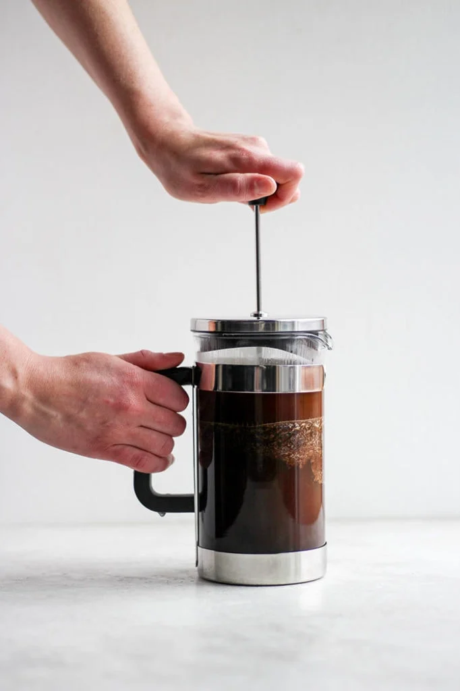
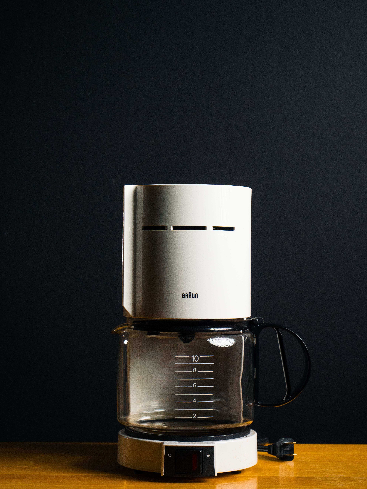
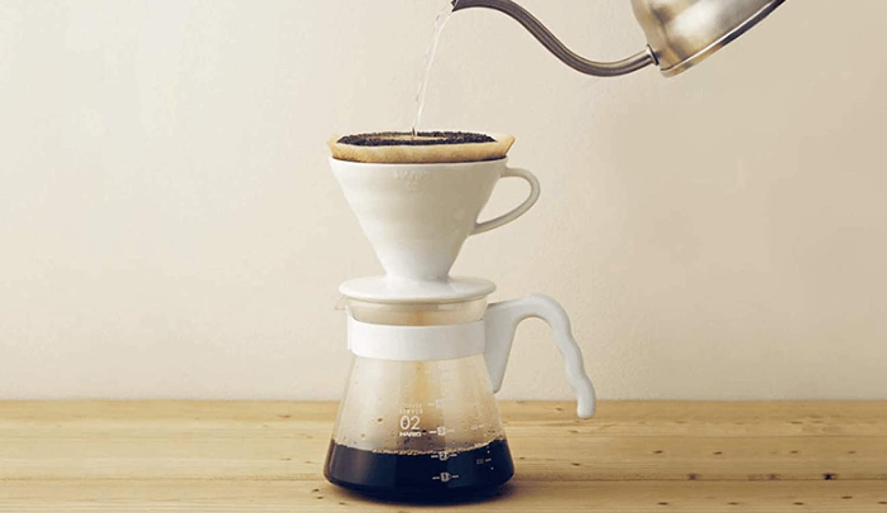
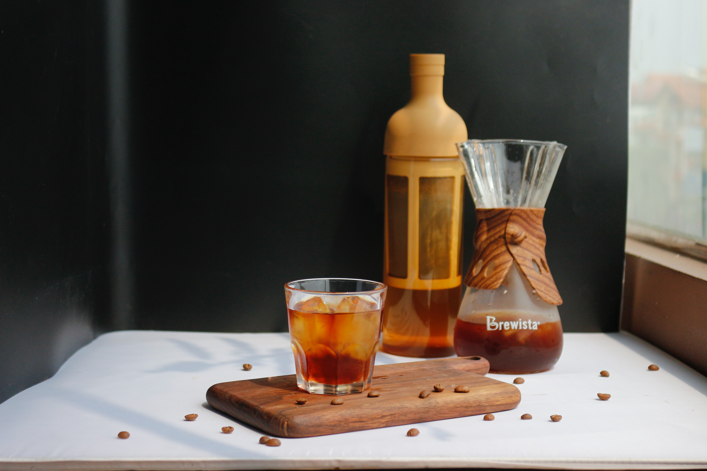

French press coffee is a method of brewing coffee that uses a device called a “French Press.” A French press is like a plunger that meets a strainer. It allows you to brew ground coffee in a container by brewing, pressing , and straining all in one. After the coffee is brewed, you press the ground coffee beans to the bottom of the beaker with a fine mesh strainer, which leaves you strong, bold, beautiful coffee.
The Differences Among Coffee Brewing Methods
All you need to make coffee is ground coffee, water, and a filter. But to understand the differences among coffee brewing methods, from start to finish, we’ll look at the following variables: the texture or mouthfeel of the finished drink (or “why we like it”); the filter material, brewing process, and tips for grind size (or “how it works”); and the ideal mind-set and prior experience of the home brewer (or “who’s it for”).


Depends on the machine, but its anatomy is similar to a pour over dripper. A conical filter sits above a pot. Place a paper filter (unless the device has a built-in reusable filter), fill it with ground coffee, and press “start.” Like a pour over, the paper filter results in a clarified mouthfeel.

Basic pour-overs come in a range of sizes and designs but generally brew directly into your mug through a paper filter. The most popular brand is the Melitta. To brew pour-over coffee, set up the pour-over on top of a mug and add a paper filter. The medium grounds go inside the filter, and then you pour boiling water on top.

Cold brew coffee is crisp and refreshing. The mouthfeel is silky and light. Depending on the kind of coffee you choose to use, profiles can be gorgeously fruity or tart, or chocolaty and rich.